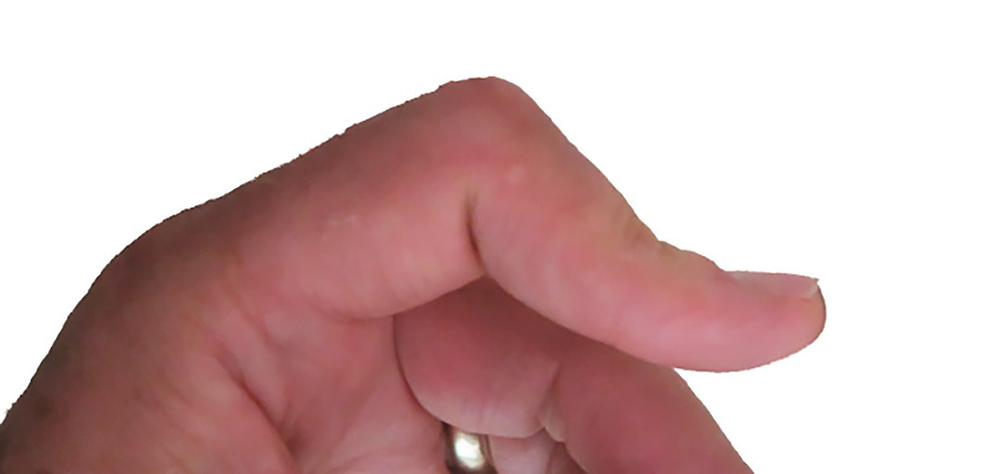

Kondisyon
Defòmite Boutonyè
Yon blesi tandon santral la sou jwenti nan mitan dwèt la ki fè li difisil pou lonje jwenti a.

Illustration © American Society for Surgery of the Hand
Kisa yon defòmite boutonyè ye?
Defòmite boutonyè (twou bouton) rive lè pati santral tandon ekstansè a, yo rele bann santral, blese kote li tache sou jwenti nan mitan dwèt la. Lè bann santral la chire, jwenti nan mitan an tonbe nan yon pozisyon pliye epi pwent dwèt la sote anlè nan yon pozisyon dwat oswa depase dwat. Dwèt la sanble y ap pouse l atravè yon twou bouton, se la non an soti.
Sentòm komen
- Anflamasyon ak doulè sou dèyè jwenti nan mitan dwèt la
- Jwenti nan mitan an pliye e ou pa ka lonje l nèt
- Pwent dwèt la rete nan yon pozisyon depase dwat
- Difikilte pou lonje dwèt la pou mete gan oswa mete men nan yon pòch
- Sansiblite sou tèt jwenti nan mitan an (jwenti PIP la)
Poukisa sa rive?
Defòmite boutonyè souvan sòti nan youn nan twa kòz sa yo:
- Yon pliyaj fòse nan dwèt la, tankou lè yon boul frape pwent yon dwèt ki dwat
- Yon koup sou dèyè dwèt la ki koupe bann santral la
- Atrit rimatoyid, ki ka lonje epi febli bann santral la ak tan
Si yon blesi fre pa detekte, defòmite a ka vin fiks nan kèk semèn apre pandan dwèt la rete nan move pozisyon an.

Illustration © American Society for Surgery of the Hand
Opsyon tretman
Tretman san operasyon
- Atèl. Yo mete yon atèl ki kenbe jwenti nan mitan an dwat nèt pandan l kite jwenti pwent la pliye. Atèl la jeneralman pote san rete pandan anviwon 6 semèn, apre sa yo wete l piti piti. Terapi men gide pwosesis sa a.
- Egzèsis terapi men. Pliye jwenti pwent la pandan jwenti nan mitan an nan atèl ede tandon an geri ak bon longè a epi anpeche dwèt la vin rèd.
Tretman chirijikal
- Reparasyon dirèk. Si bann santral la koupe (pa egzanp, nan yon laserasyon), souvan yo koud li ansanm ankò nan sal operasyon an.
- Rekonstriksyon. Si blesi a ansyen oswa dwèt la bloke nan pozisyon boutonyè a, yon rekonstriksyon tandon ka nesesè pou remete balans nan dwèt la.
Sa pou w tann nan vizit ou
Dr. Barrera ap egzamine dwèt la epi teste kijan ou ka lonje jwenti nan mitan an kont yon ti rezistans. Souvan yo pran radyografi pou chèche yon ti moso zo. Blesi boutonyè ki fèmen e ki fre jeneralman byen trete ak yon atèl si tretman an kòmanse byen vit apre blesi a. Pou w fè evalye nan premye semèn oswa de a fè yon vrè diferans.
Rele nou si ou pa ka lonje jwenti nan mitan yon dwèt nèt apre yon blesi, si tèt jwenti nan mitan an trè anfle e sansib, oswa si gen yon koup sou dèyè dwèt la sou jwenti nan mitan an.
Gade tou
Kesyon?
Rele kote biwo ou a pou kesyon ki pa ijan:
- NYU Langone Laurelton · 646-501-4950
- NYU Orthopedic, Woodside · 929-429-3222
- NYU Orthopedic, Richmond Hill · 718-206-6923
- Jamaica Hospital Ambulatory Care Center (ACC) · 718-301-0720
Gade enfòmasyon kontak biwo nou yo pou adrès ak nimewo faks.